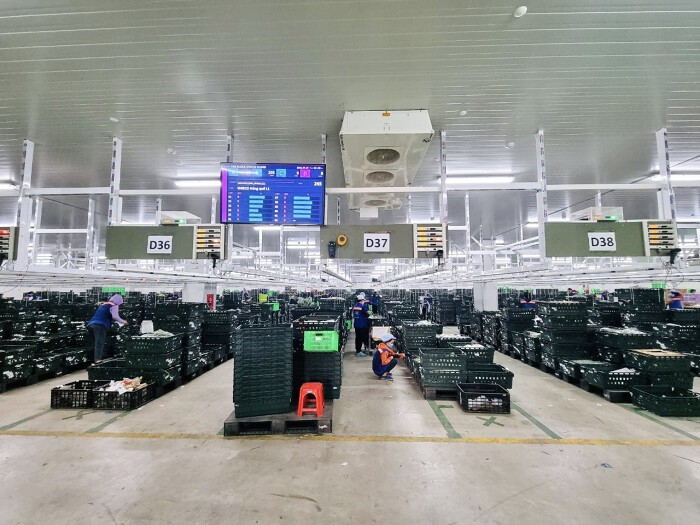
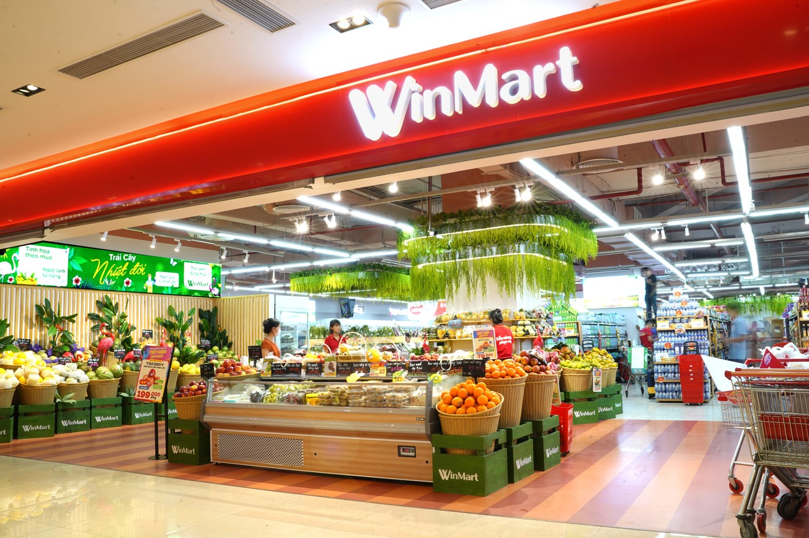

Overview of SCM System
The WinCommerce SCMIS centralizes and automates operations across warehouses, transportation, ordering, suppliers, and forecasting — supporting the entire retail logistics network of WinMart/WinMart+.
Warehouse Management (WMS)
Real-time inventory and operations at distribution centers and cross-docking hubs.
- Tracks stock by SKU, batch, and expiry date for fresh and FMCG items.
- Optimizes put-away, picking, and consolidation for WinMart/WinMart+ store orders.
- Provides real-time stock levels to the SCM dashboard and ERP.
- Reduces stock-out and overstock situations at stores.
Transportation Management (TMS)
Route planning and fleet scheduling for DC → store and supplier → DC delivery.
- Optimizes multi-drop routes for WinMart/WinMart+ stores by area and delivery window.
- Combines store orders into efficient vehicle loads to reduce logistics costs.
- Provides ETA and delivery status updates to store managers and DC supervisors.
- Supports cost analysis by route, carrier, product category, and vehicle type.
Order Management (OMS)

Centralized life-cycle management of orders across suppliers, DCs, and stores.
- Receives demand signals from POS data and forecasting models.
- Generates DC and store replenishment orders automatically based on policies.
- Synchronizes order status across ERP, WMS, and TMS modules in real time.
- Improves service level while controlling inventory investment.
Supplier Collaboration Portal
Collaboration hub for purchase order confirmation, ASN uploads, and performance tracking.
- Suppliers confirm POs, upload ASN, and manage delivery schedules online.
- Shares performance indicators such as OTIF, lead time, and quality incidents.
- Supports issue logging for shortages, delays, and quality problems.
- Strengthens long-term collaboration within Masan Group’s supply base.
AI Forecasting
AI-driven demand prediction and replenishment planning at DC and store level.
- Uses historical POS data, promotions, and seasonality to forecast demand by SKU and location.
- Feeds recommended order quantities into the OMS module for automatic replenishment.
- Helps balance product availability, inventory cost, and freshness for perishable items.
- Supports scenario analysis for campaigns, price changes, and new product launches.
SCM Dashboard
Real-time KPIs for supply chain managers and executives.
- Provides visibility on logistics cost, stock-out rate, excess inventory, and service level.
- Monitors daily performance by region, DC, store cluster, and product category.
- Highlights bottlenecks in warehouse, transportation, and supplier performance.
- Supports data-driven decisions for network design, sourcing, and promotion planning.